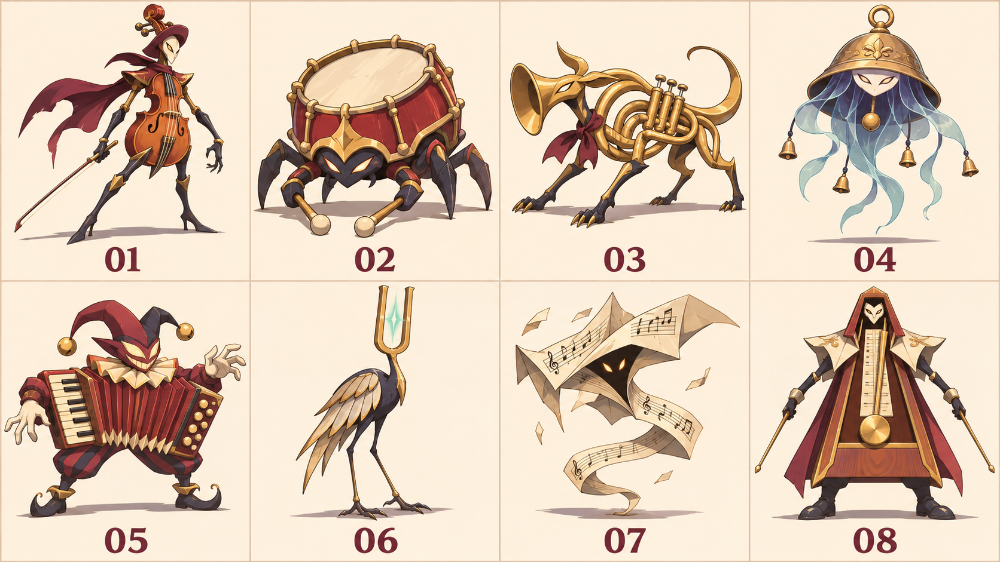
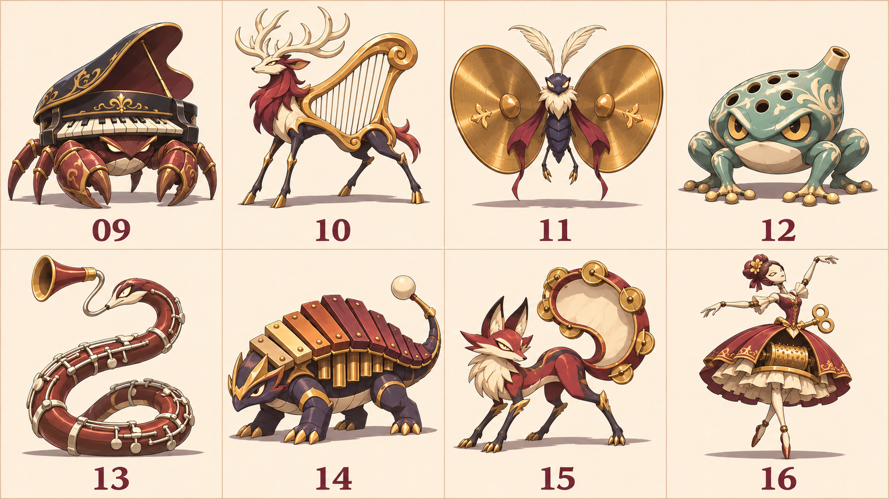
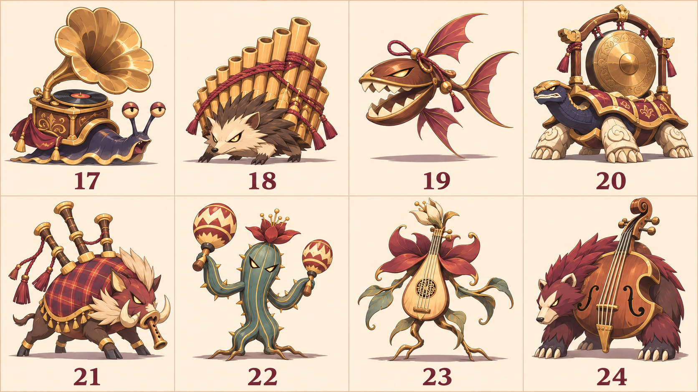
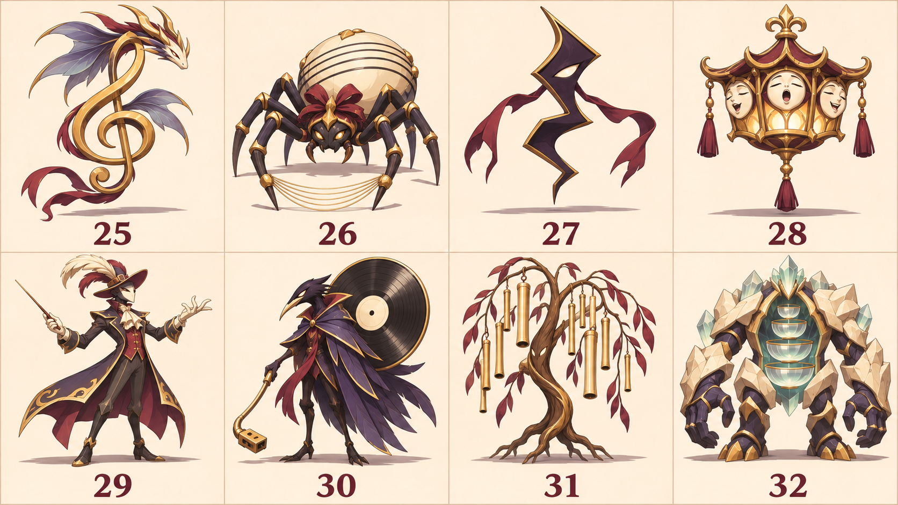

音律幻想 · 敌人候选 01–32
复古动漫赛璐璐 · 八种音乐相关形象 · 编号从左到右、从上到下。名称暂定，能力待选择后设计。

01 弦偶剑士小提琴木偶、琴弓、细长关节。
02 战鼓甲虫鼓形甲壳、六足、鼓槌前肢。
03 铜管猎犬圆号管身、喇叭口吻部、四足。
04 铃音水母铃铛伞盖、共鸣触须、悬浮。
05 风箱小丑手风琴躯干、折叠风箱、短靴。
06 音叉鹭U 形音叉头颈、长腿、金属羽翼。
07 失谱幽灵折纸乐谱、漂浮蝠鲼轮廓。
08 节拍守卫节拍器躯干、钟摆、指挥棒手臂。仅供形象筛选，不代表已制作模型或接入玩法。生成提示词 · 生成记录
09–16

09 琴壳寄居蟹10 竖琴鹿11 铜钹蛾12 陶笛蛙13 巴松游蛇14 木琴棘龙15 铃鼓狐16 八音盒舞姬17–24

17 留声蜗牛18 排箫刺猬19 响板飞鱼20 铜锣巨龟21 风笛野猪22 沙槌仙人掌23 鲁特花妖24 低音提琴熊25–32

25 谱号幼龙26 谱线织蛛27 休止影28 合唱灯灵29 游吟指挥家30 黑胶收割者31 风铃柳灵32 共鸣晶巨像